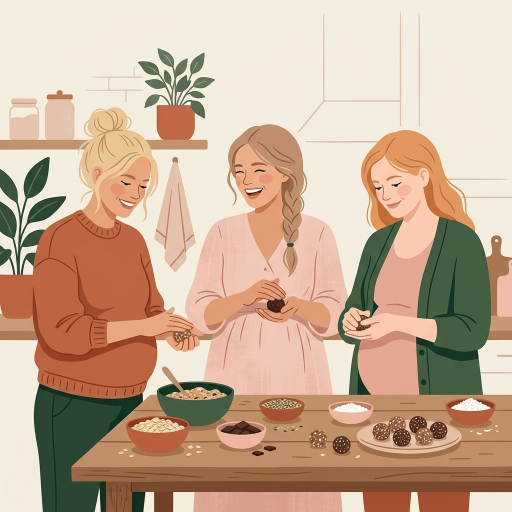
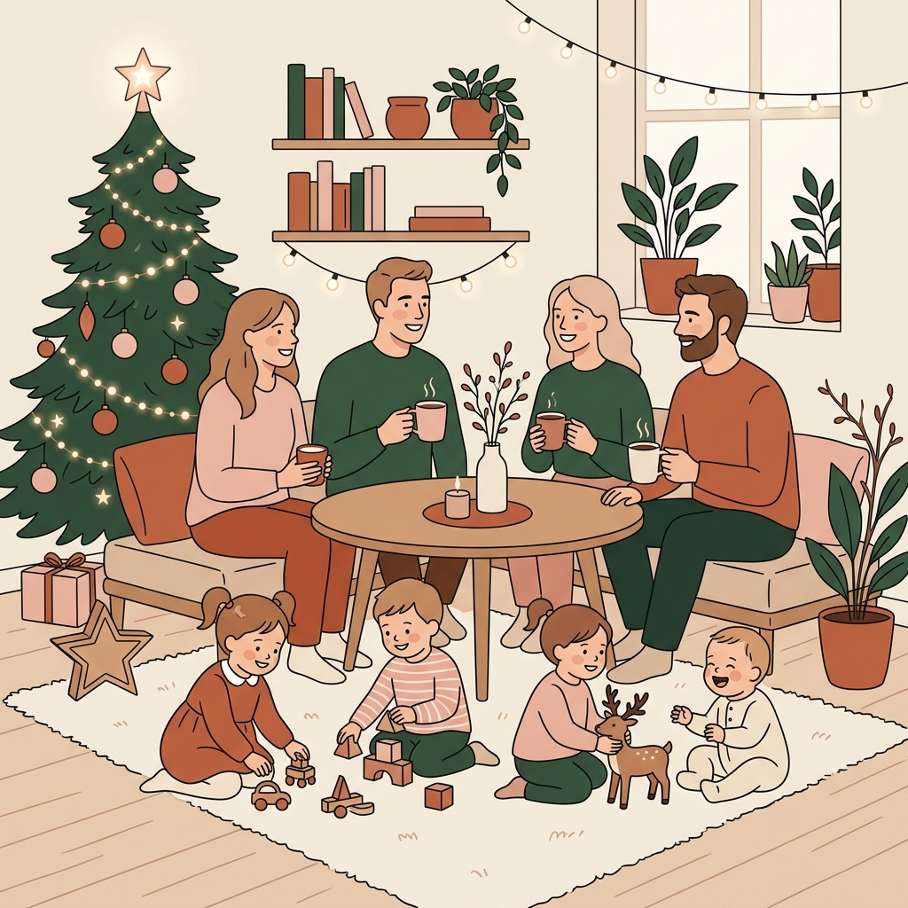
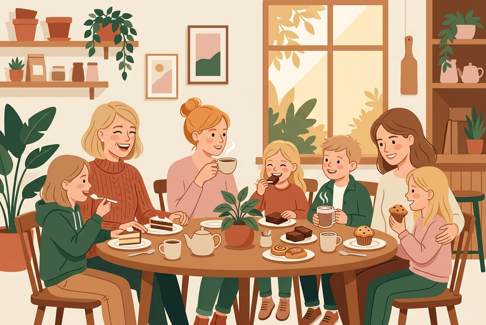
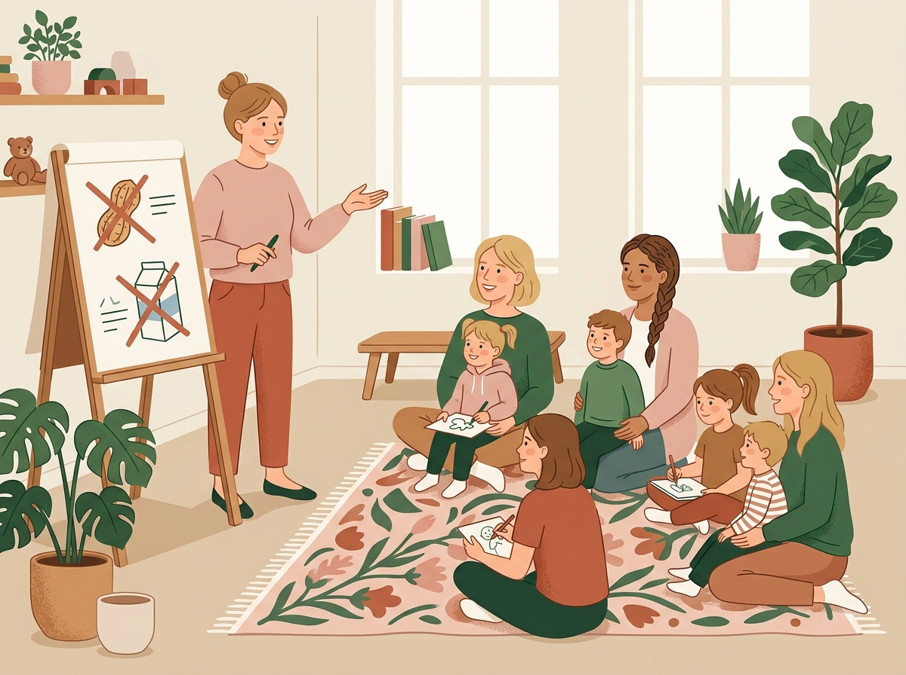

Ideen, die wir in Frankfurt anpacken wollen.
Mainhattan Mamas ist ein Netzwerk im Aufbau.
Wir entwickeln gezielte Vorhaben, die dort ansetzen, wo Familien im Alltag oft improvisieren, verzichten oder durch das Raster fallen. Auf dieser Seite stellen wir unsere vier Herzensprojekte vor, die sich aktuell in der Konzeptions- und Planungsphase befinden.
Manche stehen in den Startlöchern, andere brauchen noch den passenden Raum, Partnerkliniken oder finanzielle Anschubförderung durch Stiftungen und Spenden. Jedes dieser Vorhaben steht für echte Teilhabe, Entlastung und Zusammenhalt im Frankfurter Familienalltag.
Projektförderung besprechen
Von Kugel zu Kugel
Energiebällchen von Schwangeren für Wöchnerinnen.
Im Wochenbett zählt jede Kalorie – und jede Hand. Wenn das Baby auf der Brust schläft, Dauerstillen angesagt ist oder einfach die Kraft fehlt, sich an den Herd zu stellen, braucht es Snacks, die nahrhaft sind und sich unkompliziert mit einer Hand essen lassen.
Mit „Von Kugel zu Kugel“ verbinden wir Frauen über die Geburtsschwelle hinweg: Schwangere treffen sich in entspannter Runde, tauschen sich aus und rollen gemeinsam energiereiche, gesunde Stillkugeln.
Ein Teil des Vorrats wandert in den eigenen Gefrierschrank für das eigene Wochenbett. Der andere Teil wird liebevoll verpackt – versehen mit einer persönlichen Mutmach-Karte – und direkt dort verteilt, wo frischgebackene Mütter sind: auf den Wöchnerinnen-Stationen kooperierender Frankfurter Geburtskliniken oder über unsere Wochenbett-Patinnen.
- Dafür suchen wir: Partnerkliniken & Hebammenpraxen in Frankfurt, Fördermittel für hochwertige Bio-Zutaten und nachhaltige Verpackungen.
Mini-Fest für die Minis (0–18 Monate)
Frankfurts erstes Festformat exklusiv für die Allerkleinsten.
Stadtteilfeste und Weihnachtsmärkte: Frankfurt feiert gern. Doch für Eltern mit Babys und Neugeborenen sind diese Events oft der pure Stress: Kälte, Lärm, Gedränge, Schotterwege für den Kinderwagen und weit und breit kein ruhiger Ort zum Stillen oder Wickeln.
Die Folge: Viele Familien meiden öffentliche Feste im gesamten ersten Lebensjahr.
Mit dem „Mini-Fest für die Minis“ ändern wir das: Wir schaffen das erste geschützte Festformat in Frankfurt, das ausschließlich auf die Bedürfnisse von Säuglingen, Krabbelkindern und ihren Eltern zugeschnitten ist.
- Geschützter Sinnesraum: Kein Lärm, keine Reizüberflutung, sondern warme, weiche Krabbelinseln auf Augenhöhe der Kleinsten.
- Rundum versorgt: Gemütliche Stillecken mit bequemen Sesseln, Fläschchenwärmer, geschützte Wickel-Oasen und barrierefreie Kinderwagen-Parkplätze.
- Echte Begegnung: Eltern knüpfen Kontakte im Viertel, lauschen sanften Fingerspielen und genießen eine entspannte Auszeit. Größere Geschwisterkinder müssen bei diesem speziellen Format einmal zu Hause bleiben.
Unser Auftakt: Der Mini-Adventszauber im Dezember 2026
Ein gemütliches Indoor-Adventsfest im warmen Gemeindesaal – mit warmem Punsch für Mamas, Lichterzauber, sanften Weihnachtsliedern und großen Krabbeldecken.
Dafür suchen wir: Einen geeigneten Gemeindesaal in Frankfurt, Partnerinnen für Ausstattung und Spenden für die Umsetzung.


Kuchen für alle
Sicherer Genuss darf kein Ausschlusskriterium sein.
Für die meisten Familien ist ein Stück Kuchen beim Nachbarschaftstreffen oder Kindergeburtstag das Normalste der Welt. Für Kinder mit schweren Nahrungsmittelallergien oder Anaphylaxie-Risiko (z. B. auf Erdnuss, Schalenfrüchte, Ei, Milch) bedeutet es oft: Verzicht, Angst vor Kreuzkontakten und das bittere Gefühl, am Rand stehen zu müssen.
„Kuchen für alle“ schafft sichere Begegnungsräume rund um allergiebewusstes Kochen und Backen:
- Niedrigschwellige Mitmach-Formate und Backnachmittage mit transparenten, sicheren Zutatenlisten.
- Ein Pop-up-Buffet im Viertel, bei dem betroffene Kinder einfach zugreifen dürfen – ohne Angst vor dem Notfallset.
- Ein Austausch-Netzwerk für Familien mit Allergien: erprobte Rezepte zum Teilen, Alltagstipps für Kita, Kindergeburtstag und Ausflüge sowie gute Adressen rund um den Umgang mit Allergien und Unverträglichkeiten.
- Dafür suchen wir: Lehrküchen in Familienbildungsstätten oder Gemeinden, Zutaten-Sponsoring und Förderer für inklusive Begegnungsräume.
Allergie mutig verstehen
Stark und sicher durch den Alltag mit Anaphylaxie.
Kinder mit schweren Allergien merken früh: Für mich gelten andere Regeln. Doch wie erklärt man einem Drei- oder Fünfjährigen kindgerecht, warum die Notfalltasche immer dabei sein muss, ohne Panik auszulösen?
„Allergie mutig verstehen“ ist ein interaktives Mutmach- und Begegnungsformat für betroffene Kinder und ihre Eltern:
- Über Geschichten, spielerische Übungen und kreative Methoden lernen Kinder, ihre Allergie altersgerecht zu verstehen und selbstbewusst Grenzen zu setzen („Ich frage erst Mama“).
- Eltern finden einen geschützten Raum für Erfahrungsaustausch und Vernetzung im Alltag.
- Ergänzt medizinische Notfallschulungen durch alltagsnahe, psychologische Stärkung der Kinder.
- Dafür suchen wir: Förderpartner zur Erstellung von kindgerechtem Spiel- und Anschauungsmaterial sowie Finanzierung für Pilot-Workshops.

Sie entscheiden, was wachsen darf.
Sie vertreten eine Stiftung, leiten ein Unternehmen, vergeben Fördermittel oder möchten als Privatperson eine Anschubfinanzierung ermöglichen?
Sie können jedes dieser vier Projekte gezielt als Ganzes fördern oder einen konkreten Baustein möglich machen:
Die Zutaten und Verpackungen für eine Runde „Von Kugel zu Kugel“
Die Krabbel-Ausstattung oder Raummiete für das erste „Mini-Fest“ im Advent
Sichere Bio-Zutaten und Küchenmiete für „Kuchen für alle“
Kindgerechte Materialien für „Allergie mutig verstehen“
Sie entscheiden, welche Idee in Frankfurt Wirklichkeit wird. Wir machen transparent, was daraus entsteht.
Jetzt Projektförderung besprechen